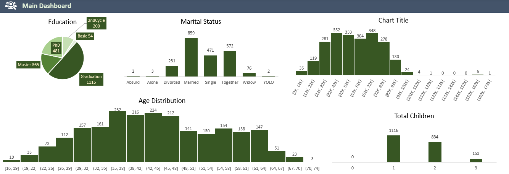

Concept, Design, and Development
Challenge
Understanding the effectiveness of marketing campaigns and customer behavior patterns.
Goal
Identify key areas to focus on for increasing sales and improving marketing ROI.
Result
A comprehensive analytics dashboard enabling data-driven decision making.
Project Overview
This project showcases data analytics skills using a dataset from Maven Analytics. The primary objective was to develop a comprehensive marketing performance dashboard that provides deep insights into customer behavior and campaign effectiveness.
Data Preprocessing
- Thorough cleaning of the initial dataset
- Advanced handling of null and anomalous fields
- Creation of new columns for in-depth purchase and spend analysis
- Data normalization and standardization for consistent analysis
Analysis Techniques
- Utilization of pivot tables for multi-dimensional data aggregation
- Implementation of various data visualization techniques for clear insight representation
- Application of statistical methods to identify significant trends and correlations
- Iterative refinement of the analysis to focus on the most impactful metrics
Dashboard Creation
The cornerstone of this project was the creation of an intuitive and comprehensive dashboard. This process demanded not only a deep understanding of the underlying data but also strong skills in data visualization and user experience design.
Main Dashboard
The main dashboard provides a high-level overview of key marketing performance metrics. It offers instant insights into campaign effectiveness, ROI, and overall marketing health, enabling quick strategic decisions.
Customer Insights Dashboard
Accessible via the "Customers" button, this specialized dashboard dives deep into customer segmentation and behavior patterns. It reveals valuable insights about customer preferences, purchasing habits, and lifetime value.

